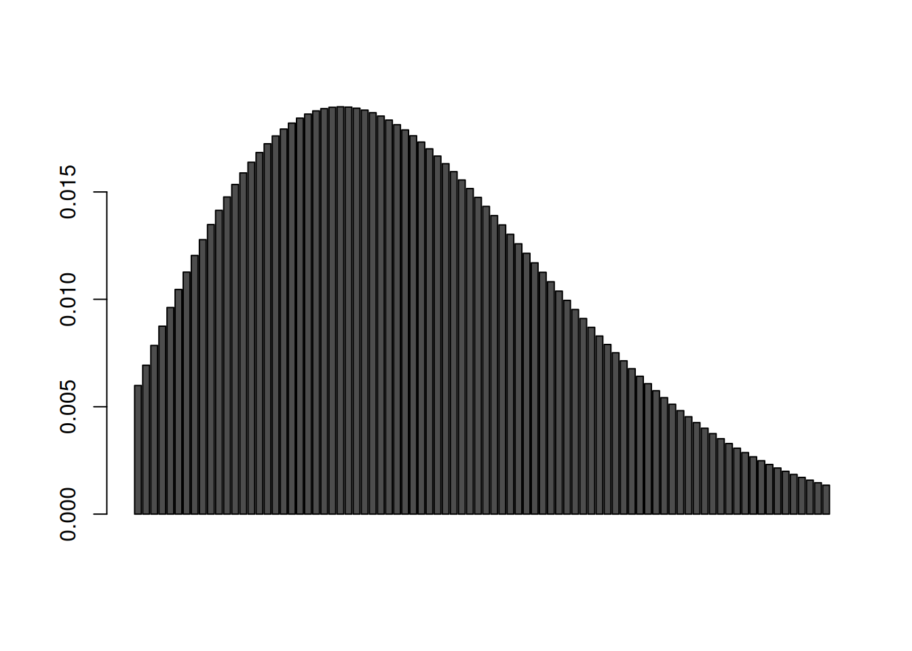

library(gt)1-2. Create a problem in your field similar to the one that starts on page 46 (Fig. 2.1.11) in Class Handout #2
“The probability of the occurrence of either one event or another or both is the sum of their individual probabilities minus the probability of their joint occurrence.”
The throw in football passing plays are either shorter or longer than the distance required for a first down. - \(\mathrm{prob\ of\ catch\ when\ } xyac_{fd} > 0.99 => who\) - \(\mathrm{prob\ of\ catch\ when\ } xyac_{fd} < 0.99 * prob\ expected_{fd}\) - \(x:play_type == "pass" && \mathrm{prob\ of\ negative\ epa\ } (epa < 0)\)
The quarterback of a football has up to six eligible receivers on a passing play. There are also two distinct scenarios on a passing play. Throw past the first down distance so that a catch ensures a first down. Or throw short of first down distance and leave the receiver work to do (in the form of yards after catch, yac) to gain the first down. Each receiver has a probability for getting a first down when the throw distance is less than first down distance (lt_fd) and another probability when the throw distance is greater than first down distance (gt_fd). These probabilities are mutually exclusive but not independent and the added probabilities (pr_gt_fd + pr_lt_fd) is the net probability for a targeted receiver getting a first down.
The probability of a fumble by the receiver after a catch is, however, independent. Lost fumble turnovers are rare but costly occurrences for the football offense. The best NFL teams, in many cases, minimize their turnovers.
#\| nflfastr
nflfastR::load_pbp(2025) |>
dplyr::group_by(receiver, receiver_id, posteam) |>
dplyr::filter(play_type == "pass", air_yards < yardline_100, posteam == "DET") |>
dplyr::mutate(neg_play = ifelse(
sack == 1, 1, ifelse(
fumble_lost == 1, 1, ifelse(
interception == 1, 1, 0)))) |>
dplyr::mutate(exp_fd = ifelse(xyac_fd >= 0.99, 1, 0)) |>
dplyr::mutate(actual_exp_fd = ifelse(xyac_fd >= 0.99 & first_down, 1, 0)) |>
dplyr::mutate(not_fd = ifelse(xyac_fd < 0.99, 1, 0)) |>
dplyr::mutate(actual_not_fd = ifelse(xyac_fd < 0.99 & first_down, 1, 0)) |>
dplyr::summarize(
passes = dplyr::n(),
neg_pct = sum(neg_play) / dplyr::n(),
gt_com = sum(exp_fd*(complete_pass)),
gt_fd = sum(exp_fd, na.rm=TRUE),
actual_gt_fd = sum(actual_exp_fd, na.rm=TRUE),
gt_fd_pct = actual_gt_fd / gt_fd,
lt_com = sum(not_fd*(complete_pass)),
lt_fd = sum(not_fd, na.rm=TRUE),
actual_lt_fd = sum(actual_not_fd, na.rm=TRUE),
lt_fd_pct = actual_lt_fd / lt_fd ) |>
dplyr::ungroup() |>
dplyr::select(receiver, posteam, passes, neg_pct, gt_com, gt_fd, actual_gt_fd, gt_fd_pct, lt_com, lt_fd, actual_lt_fd, lt_fd_pct) |>
gt()`summarise()` has grouped output by 'receiver', 'receiver_id'. You can override
using the `.groups` argument.| receiver | posteam | passes | neg_pct | gt_com | gt_fd | actual_gt_fd | gt_fd_pct | lt_com | lt_fd | actual_lt_fd | lt_fd_pct |
|---|---|---|---|---|---|---|---|---|---|---|---|
| A.St. Brown | DET | 57 | 0.03508772 | 17 | 24 | 17 | 0.7083333 | 30 | 33 | 11 | 0.3333333 |
| B.Wright | DET | 8 | 0.00000000 | 0 | 0 | 0 | NaN | 7 | 8 | 3 | 0.3750000 |
| D.Montgomery | DET | 13 | 0.00000000 | 2 | 2 | 2 | 1.0000000 | 9 | 11 | 4 | 0.3636364 |
| I.TeSlaa | DET | 3 | 0.00000000 | 1 | 2 | 1 | 0.5000000 | 0 | 1 | 0 | 0.0000000 |
| J.Gibbs | DET | 28 | 0.00000000 | 1 | 3 | 1 | 0.3333333 | 25 | 25 | 7 | 0.2800000 |
| J.Williams | DET | 30 | 0.03333333 | 9 | 21 | 9 | 0.4285714 | 8 | 9 | 5 | 0.5555556 |
| K.Raymond | DET | 12 | 0.00000000 | 1 | 2 | 1 | 0.5000000 | 8 | 10 | 2 | 0.2000000 |
| S.LaPorta | DET | 35 | 0.00000000 | 10 | 14 | 10 | 0.7142857 | 18 | 21 | 5 | 0.2380952 |
| NA | DET | 9 | 0.00000000 | NA | 0 | 0 | NaN | NA | 0 | 0 | NaN |
In the table “gt_” refers to passes that travel greater than the distance to the first down. “lt_” refers to passes that travel less than the distance to the first down. “neg_pct” refers to percent of passes that are caught and then fumbled to the other team. The principal receivers for DET are A.St.Brown (ASB), J.Gibbs (JG), J.Williams (JW) and S.LaPorta (SLP).
data.frame( receiver = c("A.St.Brown","J.Gibbs","J.Williams","S.LaPorta"), abbrev = c("ASB", "JG", "JW", "SLP"), gt_fd = c(0.79, 0.33, 0.47, 0.69), lt_fd = c(0.35, 0.18, 0.55, 0.26), fumble = c(0.02, 0, 0.03, 0) ) |>
gt()| receiver | abbrev | gt_fd | lt_fd | fumble |
|---|---|---|---|---|
| A.St.Brown | ASB | 0.79 | 0.35 | 0.02 |
| J.Gibbs | JG | 0.33 | 0.18 | 0.00 |
| J.Williams | JW | 0.47 | 0.55 | 0.03 |
| S.LaPorta | SLP | 0.69 | 0.26 | 0.00 |
“epa” stands for Expected Points Added. Fumble turnovers and first downs have an average epa.
nflfastR::load_pbp(2025) |>
dplyr::filter(play_type == "pass", air_yards < yardline_100, fumble_lost == 1 | first_down == 1) |>
dplyr::summarize( epa_fumble = sum(epa * fumble_lost) / sum(fumble_lost), epa_fd = sum(epa* first_down) / sum(first_down)) |>
gt()| epa_fumble | epa_fd |
|---|---|
| -3.958972 | 1.616477 |
\[ \mathrm{expected\ return\ on\ throw\ beyond\ first\ down} = P[\mathrm{gt\_fd}] * epa_{fd} + P[\mathrm{fumble}] * epa_{fumble} \\ \mathrm{expected\ return\ on\ throw\ short\ of\ first\ down} = P[\mathrm{lt\_fd}] * epa_{fd} + P[\mathrm{fumble}] * epa_{fumble} \]
| receiver | gt_fd epa | lt_fd epa |
|---|---|---|
| ASB | 1.18 | 0.48 |
| JG | 0.52 | 0.28 |
| JW | 0.63 | 0.76 |
| SLP | 1.10 | 0.46 |
Detroit has two receivers, A.St.Brown and S.LaPorta, who are good at getting first downs on longer throws and on shorter throws. J.Williams is a threat on short throws but struggles to catch longer throws. J.Gibbs is a reliable target on shorter throws but converts a small percentage of those passes into first downs.
3-4. Create a problem in your field similar to the one presented on page 56 (Fig. 2.1.15) in Class Handout #2
The application of survival analysis in sports does not use a time-based probability of occurrence like the class example does.
https://www.nature.com/articles/s41598-021-87920-6, “Temporal trends in incidence of time-loss injuries in four male professional North American sports over 13 seasons”
64.7 injuries for 1000 exposures in NFL games during one NFL team 10-year pre-season totals (https://journals.sagepub.com/doi/10.1177/0363546508316021, Epidemiology of National Football League Training Camp Injuries from 1998 to 2007)
44.8 injuries for 1000 exposures for NCAA Division 1 football games between 2014-15 and 2018-19 (https://pubmed.ncbi.nlm.nih.gov/34280281/, Epidemiology of Injuries in National Collegiate Athletic Association Men’s Football: 2014-2015 Through 2018-2019)
One NFL game counts as one injury exposure, so a rough estimate for a single player experiencing an injury in a game is approximately 0.5%
https://mrrelevantdotcom1.wordpress.com/2014/09/16/average-nfl-career-of-three-seasons-is-completely-wrong/
Estimates vary for NFL players’ career length. An old but still often-used figure is 3.3 years across all players. Sports participation and achievement is often governed by Pareto (80-20) or Pareto-like distributions. Depending on player ability, the careers of quality NFL players is more likely 8, 12 or 15 years long. Obsolescence would not seem to be well represented by retirement in professional NFL football.
https://www.pff.com/news/nfl-investigating-positional-aging-curves-with-pff-war
An alternative is to estimate the peak performance years for NFL players and then use aging curves to describe players’ post-peak decline. Pro Football Focus analyst Timo Riske describes the peak value years for NFL players (averaged across positions) is 26-28 before player values drops at more rapid rates. This sets up a survivor model where the two events are (1.) injury and (2.) rapid post-peak decline. Like the class example, each event is a distinct path to the same endpoint, which is the end of a professional football playing career.
The model has:
Initial value based on talent projection based on draft round or salary
Ai = [injury occurs in game i] =>
\[ p = 0.005 \]
Bi = [positive or negative player development or decline in game i] => r … positive development (negative decline) more likely during early-career and less likely during late-career … so start at Game 50
\[ r_i = 1 - e^{-0.001i} \]
\[ P[\mathrm{development/decline\ through}\ j] = (1-p)^{i} \prod_{i=1}^{j-1}(1-r_{i}) \]
\[ P[\mathrm{career\ ends\ in\ game}\ j] = [p + r_j - pr_j](1-p)^{i} \prod_{i=1}^{j-1}(1-r_{i}) \]
J <- 50:(50 + (5*17))
games <- c()
surv <- c()
for (j in J) {
game <- j - 49
games <- c(games, game)
prob <- (1 - 0.995*exp(-0.001*game))*(0.995^(game-1))*prod(exp(-0.001*games))
surv <- c(surv, prob)
}
chart_data <- rbind(surv)
barplot(chart_data)